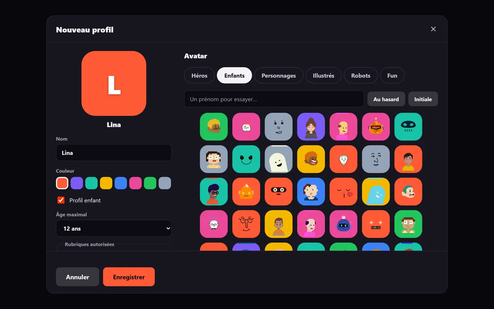
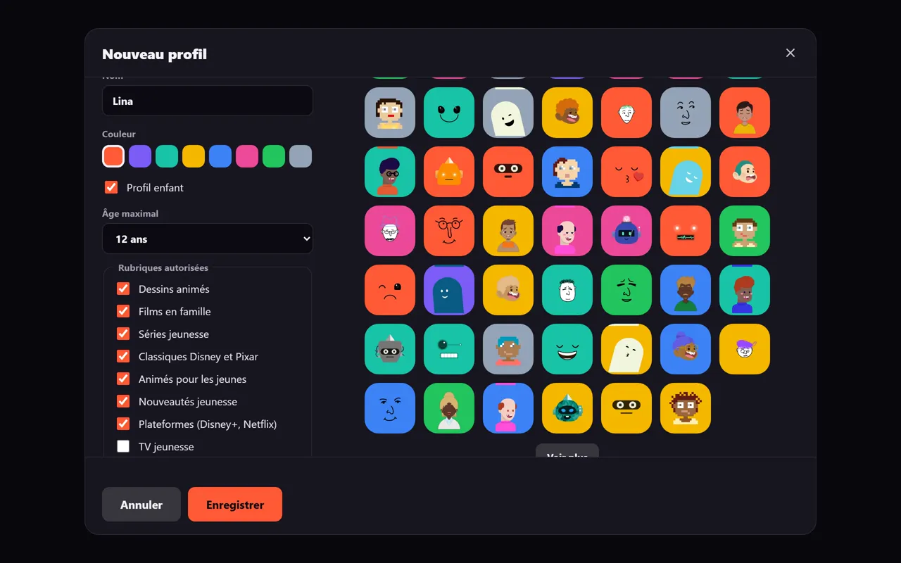
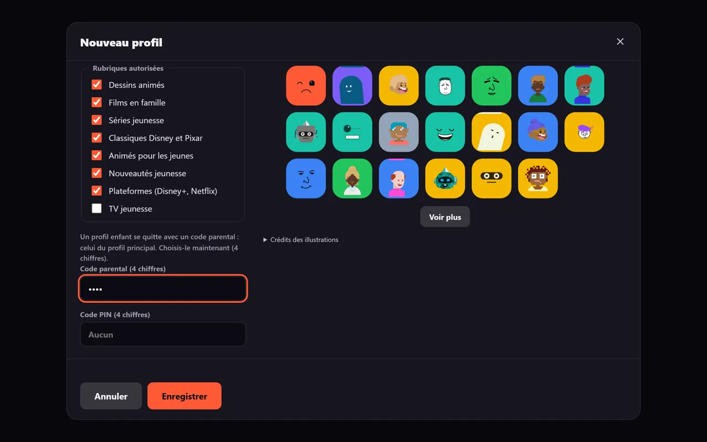
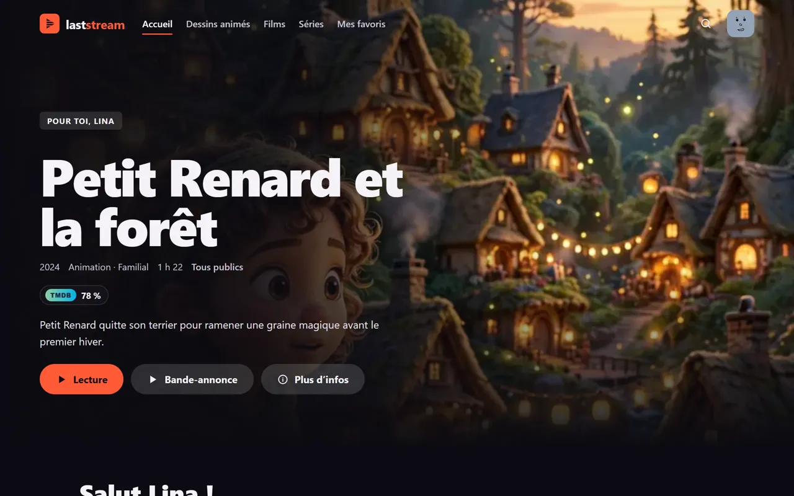
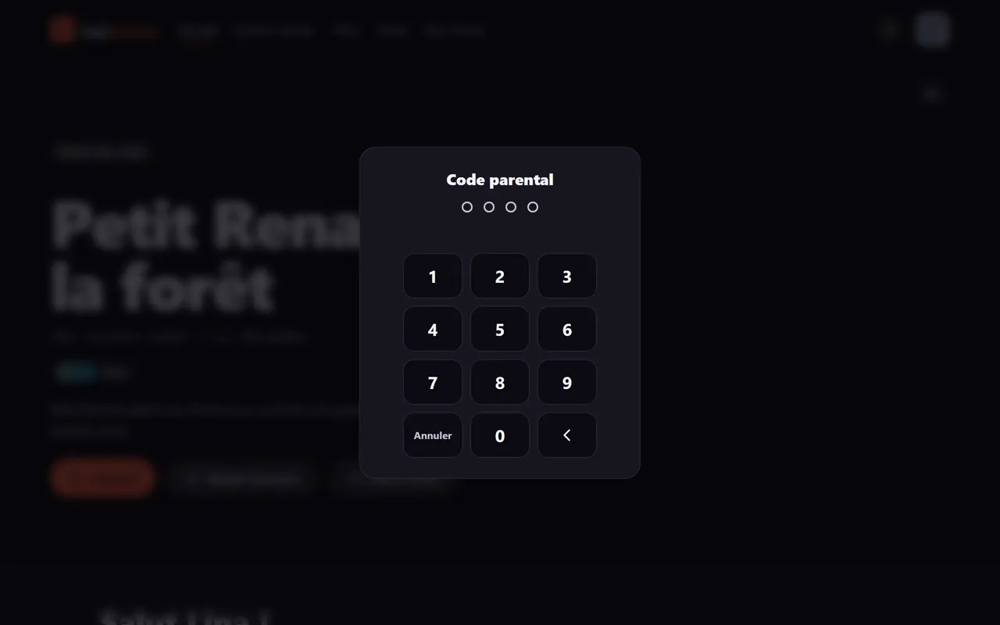

Étapes
-
Suis les étapes 1 et 2 du guide « Créer un profil » jusqu'à « Nouveau profil ».
-
Saisis le nom, choisis couleur et avatar, puis coche « Profil enfant ».

-
Choisis l'Âge maximal : 10, 12, 16 ou 18 ans (12 par défaut).
-
Coche les Rubriques autorisées voulues (voir le tableau).

-
Si le profil principal n'a pas encore de code, saisis un Code parental de 4 chiffres. Il est posé sur le profil principal.

-
Touche « Enregistrer ».

| Rubrique | Cochée par défaut |
|---|---|
| Dessins animés | Oui |
| Films en famille | Oui |
| Séries jeunesse | Oui |
| Classiques Disney et Pixar | Oui |
| Animés pour les jeunes | Oui |
| Nouveautés jeunesse | Oui |
| Plateformes (Disney+, Netflix) | Oui |
| TV jeunesse | Non |
Ce que l'enfant ne voit pas
Réglages, Statistiques, Amis, watch parties publiques, Calendrier, Découvrir, Collections, l'assistant IA, « Ne plus proposer » et le partage de bibliothèque.
Sans « TV jeunesse », l'onglet TV est masqué.
Sortir du profil enfant
Touche ton avatar, puis « Changer de profil », puis saisis le code parental.
